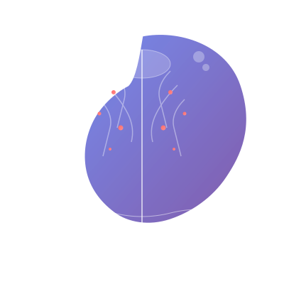
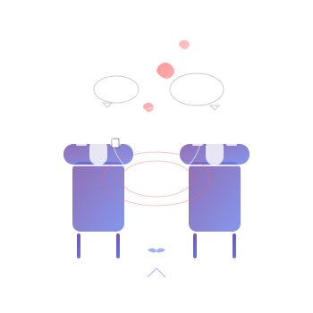

Entender la mente sin reducirla a una etiqueta
Si el cerebro viniera con un manual claro, este atlas sería considerablemente menos necesario. Aquí organizo psicología, psiquiatría y neurociencia para seguir las ideas hasta su evidencia —y detenernos exactamente donde esa evidencia termina.

Historia de la Psicología
Más de 2 500 años intentando responder una pregunta que se resiste, con bastante disciplina, a tener una sola respuesta: cómo funciona la mente humana.
Raíces Filosóficas en Grecia y Roma
Mucho antes de los laboratorios modernos, filósofos griegos sentaron las bases conceptuales de la psicología. Platón propuso que la mente existe separada del cuerpo. Aristóteles, por el contrario, sostuvo que la psique era inseparable del organismo biológico —una posición sorprendentemente compatible con la neurociencia actual.
- Hipócrates (460–370 a.C.) atribuyó los trastornos mentales a causas físicas, no a castigos divinos.
- Galeno (129–216 d.C.) desarrolló la teoría de los humores: sangre, flema, bilis amarilla y bilis negra, relacionándolos con temperamentos.
- La medicina árabe medieval, especialmente Avicena (980–1037), preservó y amplió estos conocimientos en el "Canon de Medicina".
Entre la Teología y la Medicina
Durante los muchos siglos de la Edad Media coexistieron explicaciones religiosas, filosóficas y médicas, con diferencias importantes entre regiones. En partes de Europa algunas experiencias se atribuyeron a causas sobrenaturales y hubo prácticas coercitivas; al mismo tiempo sobrevivieron tradiciones médicas y en diversos centros del mundo islámico funcionaron bimaristanes con atención organizada.
- El bimaristán de Bagdad (siglo VIII) es considerado el primer hospital psiquiátrico de la historia.
- Tomás de Aquino integró la psicología aristotélica en la filosofía cristiana.
- En Europa, los enfermos mentales eran frecuentemente excluidos; algunos eran internados en manicomios con condiciones deplorables.
La Mente como Objeto de Estudio Racional
El Renacimiento redescubrió la autonomía del ser humano como sujeto pensante. La Ilustración llevó ese impulso al extremo: la razón se convirtió en el árbitro supremo de la verdad, y la mente debía ser estudiada con el mismo rigor que la naturaleza.
- René Descartes (1596–1650) formuló el dualismo mente-cuerpo ("Cogito, ergo sum") e identificó la glándula pineal como punto de contacto entre ambos.
- John Locke (1632–1704) propuso que la mente es una tabula rasa al nacer, moldeada exclusivamente por la experiencia.
- Philippe Pinel (1745–1826) retiró las cadenas de los pacientes en el Hospital Bicêtre de París, iniciando la reforma humanitaria de la psiquiatría.
Nacimiento de la Psicología Científica
Wilhelm Wundt establece el primer laboratorio de psicología experimental en Leipzig, Alemania, en 1879. Este hecho es considerado el acta de nacimiento de la psicología como ciencia independiente de la filosofía.
- Wundt utilizó la introspección experimental para estudiar la experiencia consciente con métodos controlados.
- ¿Por qué Leipzig? La Universidad era un centro intelectual de primer orden, y Wundt contaba con el apoyo institucional necesario.
- Su obra "Principios de Psicología Fisiológica" (1874) fue el primer manual universitario de la disciplina.
Principios de Psicología — William James
William James publica "Principios de Psicología", estableciendo las bases del funcionalismo y de la psicología americana. A diferencia de Wundt, James se preguntaba para qué sirven los procesos mentales, no solo cómo son.
- Introdujo el concepto de "corriente de consciencia" (stream of consciousness).
- Fue el primer profesor de psicología en Estados Unidos (Harvard).
- Pionero en el estudio de las emociones: la Teoría James-Lange propone que las emociones son la interpretación de sensaciones corporales.
Psicoanálisis — Sigmund Freud
Sigmund Freud publica "La Interpretación de los Sueños", introduciendo el psicoanálisis y revolucionando la comprensión del inconsciente. El psicoanálisis propone que gran parte de la vida mental ocurre fuera de la conciencia.
- Estructura de la personalidad: id (pulsiones), ego (mediador racional) y superego (normas morales).
- Desarrolló el concepto de mecanismos de defensa: represión, proyección, racionalización.
- Su método clínico —la asociación libre y la interpretación de sueños— sigue siendo referencia en psicoterapia.
Conductismo — John B. Watson
John B. Watson publica "La Psicología tal como la ve el Conductista", rechazando la introspección y el inconsciente. Para el conductismo, solo el comportamiento observable y medible es objeto legítimo de estudio científico.
- Ivan Pavlov ya había descubierto el condicionamiento clásico en perros (1901), abriendo el camino.
- B.F. Skinner desarrolló el condicionamiento operante (cajas de Skinner), demostrando cómo el refuerzo y el castigo moldean la conducta.
- El conductismo dominó la psicología americana durante más de 40 años.
Psicología Humanista
Como reacción al conductismo y al psicoanálisis, Abraham Maslow y Carl Rogers desarrollan la psicología humanista, enfocándose en el potencial humano, la autorrealización y la experiencia subjetiva.
- La Pirámide de Maslow jerarquiza las necesidades humanas en cinco niveles: fisiológicas, seguridad, pertenencia, estima y autorrealización.
- Rogers desarrolló la terapia centrada en el cliente, con empatía, congruencia y aceptación incondicional como principios centrales.
- Viktor Frankl, sobreviviente del Holocausto, fundó la logoterapia: la búsqueda de sentido como motor existencial.
Revolución Cognitiva
La psicología cognitiva emerge como paradigma dominante, estudiando los procesos mentales internos: percepción, memoria, atención, lenguaje y toma de decisiones. Por primera vez, los estados internos son estudiados con rigor científico.
- George Miller (1956) publica "El número mágico 7±2", sobre la capacidad de la memoria de trabajo.
- Aaron Beck desarrolla la Terapia Cognitivo-Conductual (TCC), una familia de intervenciones con amplio respaldo para distintas condiciones, aunque la indicación depende del problema, la persona y la guía clínica aplicable.
- La metáfora del ordenador: la mente como procesador de información.
Neurociencia y Psicología Contemporánea
La "Década del Cerebro" (1990–2000) y la revolución de la neuroimagen (fMRI, PET) permitieron observar el cerebro en tiempo real. Hoy la psicología integra genética, neurociencia, ciencias computacionales y ciencias sociales.
- La neurociencia afectiva (Joseph LeDoux, Antonio Damasio) revela los sustratos neurales de las emociones.
- La psicología evolucionista aplica la teoría darwiniana a la conducta humana.
- El auge de la inteligencia artificial plantea nuevas preguntas sobre la cognición y la conciencia.
- La publicación del DSM-5 (2013) y la CIE-11 (2022) codifican el conocimiento clínico actual.
Grandes tensiones que han definido la psicología
La historia de la psicología no es solo cronológica: es una historia de ideas en conflicto. Estas tensiones siguen siendo el motor del debate científico actual.
¿Es la mente algo separado del cuerpo o un producto de él? Platón vs. Aristóteles; Descartes vs. Spinoza; hoy: neurociencia vs. filosofía de la mente.
¿Los procesos mentales son idénticos a los procesos cerebrales o los trascienden? El problema difícil de la conciencia sigue sin resolverse.
¿Puede la mente estudiarse a sí misma? Wundt apostó por la introspección experimental; Watson la rechazó; la cognición abrió una tercera vía.
Freud postuló un inconsciente dinámico y motivado; la cognición lo redefinió como procesamiento automático. La neurociencia les da razón a ambos, de formas distintas.
Broca y Wernicke localizaron funciones en áreas precisas; la neuroimagen contemporánea revela que las funciones emergen de redes distribuidas e interconectadas.
¿Qué pesa más: la experiencia acumulada del clínico o el ensayo aleatorizado controlado? El debate entre arte y ciencia de la terapia continúa hoy.
Mapa de paradigmas psicológicos
Cómo leerlo: es una síntesis didáctica de influencias, no una sucesión lineal. Las escuelas coexistieron, se criticaron y evolucionaron en paralelo.
Toca o haz clic en cualquier caja para ver más detalles.
1879
1900
1913
1960
1950
Mapa mente · cerebro · conducta
Modelo simplificado con fines educativos. Las relaciones son bidireccionales y dinámicas.
Referencias principales
- Boring, E. G. (1950). A History of Experimental Psychology (2.ª ed.). Appleton-Century-Crofts.
- Hergenhahn, B. R. (2009). An Introduction to the History of Psychology (6.ª ed.). Wadsworth.
- Organización Mundial de la Salud. (2022). World Mental Health Report: Transforming Mental Health for All. OMS.
Ramas, especialidades y campos de aplicación
La psicología no es una sola disciplina con muchos nombres decorativos. Reúne áreas académicas, profesiones reguladas y campos interdisciplinarios cuyo reconocimiento cambia según el país.
Explora sin perderte entre tarjetas
La vista inicial muestra nueve ejemplos para reducir la carga visual. Puedes desplegar el atlas completo o filtrar directamente por categoría.
Resume presencia internacional en investigación, formación y aplicación profesional. Es una orientación editorial, no una medida de calidad, valor científico ni importancia humana.
Filtrar por Categoría
Psicología Social
Estudia cómo las personas se comportan en grupos y cómo los demás influyen en nuestras acciones, pensamientos y emociones.
Métodos: Experimentos de campo, encuestas, observación participante.
Áreas laborales: Organizaciones, marketing, políticas públicas, resolución de conflictos.
Investigación reciente: Efectos de las redes sociales en la identidad grupal y la polarización política.
Modelos teóricos: Teoría de la Identidad Social (Tajfel & Turner, 1979), Teoría de la Disonancia Cognitiva, Conformidad de Asch y obediencia de Milgram como marcos fundacionales del campo.
Neuropsicología
Examina la relación entre el cerebro y el comportamiento, estudiando cómo las lesiones cerebrales afectan las funciones cognitivas.
Métodos: Neuroimagen (fMRI, EEG), baterías neuropsicológicas, estudios de caso de lesión.
Áreas laborales: Hospitales, rehabilitación, investigación, peritaje judicial.
Investigación reciente: Neuroplasticidad en adultos mayores y reserva cognitiva frente al Alzheimer. → Ver Conceptos
Modelos teóricos: Modelo de localización cerebral vs. procesamiento distribuido; teoría de redes neuronales a gran escala (red por defecto, red de control ejecutivo, red de saliencia).
Psicología del Desarrollo
Analiza los cambios psicológicos que ocurren a lo largo de la vida, desde la infancia hasta la vejez.
Métodos: Estudios longitudinales, observación naturalista, estudios transversales.
Áreas laborales: Educación, pediatría, servicios sociales, gerontología.
Investigación reciente: Impacto del apego temprano en la regulación emocional adulta.
Modelos teóricos: Teoría de las etapas psicosociales de Erikson, teoría sociocultural de Vygotsky, teoría del ciclo vital (lifespan) de Baltes que enfatiza ganancias y pérdidas en todas las edades.
Psicología Clínica
Se enfoca en el diagnóstico y tratamiento de trastornos mentales y problemas de salud mental mediante psicoterapia y evaluación.
Métodos: Entrevista clínica, tests psicológicos, psicoterapia (TCC, psicodinámica, humanista).
Áreas laborales: Consulta privada, hospitales, centros de salud mental, ONGs.
Herramientas: DSM-5, CIE-11, MMPI, BDI, escalas de Hamilton. → Ver Trastornos
Modelos teóricos: Modelo biopsicosocial de Engel, modelo transdiagnóstico de Barlow, formulación de caso cognitivo-conductual y modelo diátesis-estrés de la psicopatología.
Psicología Educativa
Estudia cómo las personas aprenden y desarrolla estrategias para mejorar los procesos educativos en todos los niveles.
Métodos: Experimentos educativos, análisis de rendimiento, intervención en aula.
Áreas laborales: Escuelas, universidades, editoriales educativas, políticas públicas.
Teorías clave: Vygotsky (ZDP), Piaget (etapas), Bloom (taxonomía), Bandura (autoeficacia). → Ver Pioneros
Investigación reciente: Aprendizaje basado en la ciencia cognitiva (recuperación espaciada, práctica de recuperación); efectividad de la retroalimentación formativa en el rendimiento académico.
Psicología Organizacional
Aplica principios psicológicos en el entorno laboral para mejorar la productividad, el bienestar y la satisfacción laboral.
Métodos: Evaluación de clima laboral, selección de personal, análisis de puestos.
Áreas laborales: Recursos humanos, consultoría, multinacionales, administración pública.
Investigación reciente: Burnout, síndrome del impostor y bienestar en trabajo remoto.
Modelos teóricos: Modelo de Demandas-Recursos Laborales (JD-R), teoría de la autodeterminación aplicada al trabajo, modelo de justicia organizacional.
Psicología del Deporte
Estudia los factores psicológicos que influyen en el rendimiento deportivo y la actividad física, ayudando a atletas a alcanzar su máximo potencial.
Métodos: Visualización mental, técnicas de relajación, análisis de rendimiento bajo presión.
Áreas laborales: Equipos deportivos profesionales, selecciones nacionales, rehabilitación de lesiones.
Herramientas: Entrenamiento mental, mindfulness, rutinas precompetitivas.
Modelos teóricos: Teoría del flujo de Csikszentmihalyi aplicada al deporte, modelo de la Zona de Funcionamiento Óptimo (IZOF) de Hanin, teoría de la autoeficacia de Bandura en el rendimiento.
Psicología Cognitiva
Investiga los procesos mentales internos: percepción, memoria, atención, lenguaje, toma de decisiones y resolución de problemas.
Métodos: Tareas de tiempo de reacción, neuroimagen, modelado computacional, experimentos de laboratorio.
Áreas laborales: Investigación universitaria, diseño de interfaces (UX), inteligencia artificial.
Investigación reciente: Carga cognitiva en entornos digitales y multitarea. → Ver Memoria de trabajo
Modelos teóricos: Modelo de procesamiento de la información, teoría de la carga cognitiva de Sweller, modelo modal de memoria de Atkinson y Shiffrin.
Psicología de la Personalidad
Estudia las diferencias individuales estables en patrones de pensamiento, sentimiento y comportamiento que definen quiénes somos.
Métodos: Tests de personalidad (Big Five, MBTI, MMPI), análisis factorial, estudios longitudinales.
Áreas laborales: Clínica, selección de personal, investigación, orientación vocacional.
Investigación reciente: Plasticidad de la personalidad a lo largo de la vida; diferencias culturales en el Big Five.
Modelos teóricos: Modelo de los Cinco Grandes (Costa & McCrae), teoría psicodinámica de los rasgos, teoría del aprendizaje social de la personalidad (Rotter, Mischel), teoría PEN de Eysenck.
Psicología Experimental
Utiliza métodos científicos controlados para estudiar el comportamiento y los procesos mentales, garantizando la validez interna de los hallazgos.
Métodos: Experimentos aleatorizados, doble ciego, análisis estadístico, metaanálisis.
Áreas laborales: Universidades, centros de investigación, industria farmacéutica.
Investigación reciente: Crisis de replicabilidad y movimiento de ciencia abierta en psicología.
Modelos teóricos: Lógica del contraste de hipótesis nula, diseño experimental de Fisher, principios de validez interna y externa de Campbell y Stanley.
Psicología Familiar
Se enfoca en las dinámicas familiares, terapia de pareja y resolución de conflictos dentro del núcleo familiar desde una perspectiva sistémica.
Métodos: Terapia sistémica, genograma, observación de interacciones familiares.
Áreas laborales: Consulta privada, centros de familia, mediación, trabajo social.
Investigación reciente: Impacto del divorcio y las familias reconstituidas en el desarrollo infantil.
Modelos teóricos: Teoría general de sistemas aplicada a la familia (Minuchin), modelo circumplejo de Olson, teoría de la triangulación de Bowen.
Psicología Jurídica y Forense
Aplica principios psicológicos en el sistema legal: peritaje, evaluación de imputabilidad, testimonio experto y perfiles criminológicos.
Métodos: Evaluación forense, análisis del testimonio, entrevista cognitiva, perfilado criminal.
Áreas laborales: Tribunales, prisiones, policía, servicios de protección de menores.
Investigación reciente: Fiabilidad del testimonio ocular y prevención de falsas confesiones.
Modelos teóricos: Modelo de la Toma de Decisiones Legal, teoría de la memoria reconstructiva de Loftus, criterios de análisis de la validez de la declaración (SVA/CBCA).
Psicología Evolutiva
Examina cómo los procesos psicológicos han evolucionado para resolver problemas adaptativos a lo largo de la historia evolutiva humana.
Métodos: Estudios comparativos entre culturas, análisis genéticos, experimentos conductuales.
Áreas laborales: Investigación académica, neurociencia, antropología, primatología.
Investigación reciente: Orígenes evolutivos de la cooperación, la empatía y el altruismo.
Modelos teóricos: Selección de parentesco (Hamilton), altruismo recíproco (Trivers), psicología evolucionista de Cosmides y Tooby sobre módulos mentales especializados.
Psicología de la Salud
Se enfoca en cómo factores psicológicos (estrés, creencias, conductas) afectan la salud física y el manejo de enfermedades crónicas.
Métodos: Estudios epidemiológicos, intervenciones conductuales, psiconeuroinmunología.
Áreas laborales: Hospitales, oncología, cardiología, medicina preventiva.
Investigación reciente: Influencia del estrés crónico en la inflamación y la enfermedad cardiovascular.
Modelos teóricos: Modelo transaccional del estrés de Lazarus y Folkman, síndrome general de adaptación de Selye, modelo de creencias de salud (Health Belief Model).
Ciberpsicología
Estudia el impacto de la tecnología digital y el ciberespacio en el comportamiento humano, la identidad y las relaciones sociales.
Métodos: Análisis de comportamiento online, experimentos con redes sociales, etnografía digital.
Áreas laborales: Empresas tecnológicas, ciberseguridad, educación online, salud digital.
Investigación reciente: Adicción a smartphones, impacto de TikTok en la imagen corporal y acoso digital.
Modelos teóricos: Modelo de uso problemático de internet (Davis), teoría de la comparación social aplicada a redes sociales, hipótesis del refuerzo intermitente en el diseño persuasivo de apps.
Psicofisiología
Examina la relación entre procesos fisiológicos (ritmo cardíaco, actividad cerebral, respuesta galvánica) y estados psicológicos.
Métodos: Biofeedback, poligrafía, EEG, medición de cortisol, eye-tracking.
Áreas laborales: Investigación, neurorehabilitación, deporte, bienestar corporativo.
Investigación reciente: Variabilidad de la frecuencia cardíaca como marcador de regulación emocional.
Modelos teóricos: Teoría polivagal de Porges, ley de Yerkes-Dodson sobre activación y rendimiento, teoría de la evaluación cognitiva de la emoción (Lazarus).
Psicología del Sueño
Se enfoca en los trastornos del sueño (insomnio, apnea, narcolepsia) y cómo el sueño afecta la salud mental, la memoria y el rendimiento.
Métodos: Polisomnografía, actigrafía, diarios de sueño, terapia cognitivo-conductual para el insomnio (TCC-I).
Áreas laborales: Unidades de sueño, medicina interna, psiquiatría, neurología.
Investigación reciente: Función del sueño en la consolidación de recuerdos y la limpieza de beta-amiloide cerebral.
Modelos teóricos: Modelo de los dos procesos del sueño (Borbély): proceso homeostático (S) y proceso circadiano (C); hipótesis de la consolidación sináptica durante el sueño.
Psicología de Emergencias
Se especializa en intervención psicológica en crisis, primeros auxilios psicológicos (PAP), desastres naturales y situaciones traumáticas.
Métodos: Primeros Auxilios Psicológicos (OMS), EMDR, técnicas de debriefing.
Áreas laborales: Protección civil, Cruz Roja, equipos de emergencias, policía, bomberos.
Investigación reciente: Efectos psicológicos a largo plazo en sobrevivientes de desastres y pandemias.
Modelos teóricos: Modelo de gestión del estrés de incidentes críticos (CISM), teoría del crecimiento postraumático de Tedeschi y Calhoun.
Psicología Intercultural
Estudia cómo la cultura, los valores y las normas sociales moldean el comportamiento humano y los procesos psicológicos.
Métodos: Comparaciones cross-culturales, etnografía psicológica, análisis de valores (Hofstede).
Áreas laborales: Organizaciones internacionales, diplomacia, turismo, cooperación al desarrollo.
Investigación reciente: Diferencias culturales en el diagnóstico de trastornos mentales; psicología indígena.
Modelos teóricos: Dimensiones culturales de Hofstede, teoría del relativismo cultural en psicopatología, formulación cultural del DSM-5-TR.
Psicología del Tráfico
Estudia el comportamiento humano en el contexto vial: distracción, agresividad al volante, fatiga y toma de decisiones en situaciones de riesgo.
Métodos: Simuladores de conducción, análisis de accidentes, test de aptitud.
Áreas laborales: Dirección General de Tráfico, autoescuelas, compañías aseguradoras, ingeniería vial.
Investigación reciente: Distracción por teléfono móvil y aceptación psicológica de vehículos autónomos.
Modelos teóricos: Modelo de recursos atencionales múltiples de Wickens, teoría de la percepción del riesgo aplicada a la conducción.
Psicología del Consumidor
Estudia cómo los principios psicológicos influyen en la toma de decisiones del consumidor y en las estrategias de marketing y publicidad.
Métodos: Neuromarketing, eye-tracking, grupos focales, análisis de comportamiento de compra.
Áreas laborales: Agencias de publicidad, empresas de retail, investigación de mercados.
Investigación reciente: Psicología de las compras impulsivas online y el papel de los algoritmos de recomendación.
Modelos teóricos: Modelo de Elaboración Likelihood (Petty & Cacioppo), teoría del comportamiento planificado de Ajzen aplicada al consumo.
Psicolingüística
Investiga los procesos psicológicos que subyacen en la adquisición, comprensión y producción del lenguaje humano.
Métodos: Priming lingüístico, registro ocular, estudios de desarrollo del lenguaje en niños.
Áreas laborales: Logopedia, enseñanza de lenguas extranjeras, procesamiento del lenguaje natural (PLN).
Investigación reciente: Bilingüismo y flexibilidad cognitiva; lenguaje y pensamiento en distintas culturas.
Modelos teóricos: Hipótesis de Sapir-Whorf, teoría del dispositivo de adquisición del lenguaje de Chomsky, modelo interactivo de activación del lenguaje de Dell.
Psicología del Arte y la Creatividad
Estudia los procesos psicológicos involucrados en la creación, percepción y apreciación artística, así como la neurociencia de la creatividad.
Métodos: Experimentos de percepción estética, análisis del proceso creativo, neuroimagen.
Áreas laborales: Arteterapia, educación artística, museos, diseño, publicidad.
Investigación reciente: Arteterapia en pacientes con demencia y trauma; correlatos neurales de la experiencia estética.
Modelos teóricos: Teoría del procesamiento estético (Leder), modelo del flujo aplicado a la creatividad, teoría de los cuatro C de la creatividad (Kaufman & Beghetto).
Psicología de Género
Estudia las diferencias psicológicas relacionadas con el género y cómo los roles y estereotipos de género afectan el bienestar mental.
Métodos: Estudios comparativos, análisis de estereotipos, investigación cualitativa.
Áreas laborales: Políticas de igualdad, atención a víctimas de violencia de género, docencia, investigación.
Investigación reciente: Impacto del sexismo interiorizado en la salud mental de mujeres y minorías de género.
Modelos teóricos: Teoría de roles de género de Eagly, teoría de la interseccionalidad (Crenshaw) aplicada a la salud mental, modelo de estrés de minorías (Meyer).
Psicología Perinatal
Rama especializada que acompaña la salud mental durante el embarazo, el parto y el posparto. Estudia el vínculo temprano, el apego madre–bebé y las crisis emocionales del ciclo reproductivo.
Áreas de intervención: Cambios emocionales en el embarazo, vínculo madre–bebé, apego temprano, depresión posparto, ansiedad perinatal, duelo gestacional (pérdida gestacional, mortinato), intervención familiar.
Métodos: Entrevistas clínicas, escalas validadas (EPDS para depresión posparto), observación de la díada madre–bebé, terapia de apego.
Áreas laborales: Maternidades hospitalarias, centros de salud mental, unidades de neonatología, atención primaria.
Investigación reciente: Neurobiología de la parentalidad (oxitocina, cambios cerebrales en la madre); impacto del trauma perinatal en el desarrollo del bebé; eficacia de los programas de visita domiciliaria.
Modelos teóricos: Teoría del apego de Bowlby y Ainsworth; modelo biopsicosocial perinatal; teoría de la mentalización de Fonagy aplicada a la parentalidad.
Conexiones: → Psicología del Desarrollo · Psicología Clínica · Psiquiatría Infantil
Panorama seleccionado de psicología y psiquiatría en Latinoamérica
Latinoamérica no es una nota al pie de la historia mundial de la psicología. Esta selección introductoria —necesariamente incompleta— reúne países, tradiciones, instituciones y desafíos que deben leerse en su propio contexto.
Desarrollo histórico regional
La psicología llega a Latinoamérica a finales del siglo XIX de la mano de emigrantes europeos y de profesionales formados en Europa. Inicialmente se establece como parte de la filosofía y la medicina, antes de constituirse como disciplina autónoma. La influencia psicoanalítica —especialmente la argentina— y la posterior expansión del conductismo norteamericano marcan dos grandes olas formativas. A partir de los años 60, emerge una psicología latinoamericana crítica que cuestiona la aplicación acrítica de modelos foráneos a realidades sociales muy distintas.
Figuras como Ignacio Martín-Baró (El Salvador) propusieron una psicología de la liberación comprometida con las mayorías empobrecidas. Silvia Lane (Brasil) impulsó la psicología social crítica. Enrique Pichón-Rivière (Argentina) creó el concepto de grupo operativo y fue pionero de la psiquiatría social.
Psicología por país
Argentina
Tradición psicoanalítica más fuerte del mundo hispanohablante
- Tradición psicoanalítica: Buenos Aires concentra el mayor número de psicoanalistas per cápita del mundo. La APA (Asociación Psicoanalítica Argentina, 1942) es una de las más antiguas de América.
- Universidades clave: UBA (Universidad de Buenos Aires), UNC (Córdoba), UNLP (La Plata).
- Figuras destacadas: Enrique Pichón-Rivière, Arminda Aberastury, Jorge Rodríguez Mancini.
- Desafíos actuales: Cobertura pública limitada, acceso geográficamente desigual, tensión entre corrientes psicoanalíticas y empíricamente validadas.
Brasil
Mayor comunidad de psicólogos de América Latina
- Investigación psicológica: Brasil posee el mayor volumen de producción científica psicológica de la región; la USP (São Paulo) es referente continental.
- Psicología social crítica: Silvia Lane y la corriente sociohistórica renovaron la disciplina en los años 80.
- Universidades clave: USP, UFRJ, UFMG, PUC-SP.
- Desafíos actuales: Desigualdad de acceso, escasez de psicólogos en zonas rurales y del norte del país.
México
Centro de investigación y formación en psicología experimental
- Investigación psicológica: La UNAM (Facultad de Psicología) es la más grande de habla hispana. Importante tradición en psicología experimental y conductual.
- Universidades: UNAM, UAM, Universidad Iberoamericana, UANL.
- Figuras destacadas: Emilio Ribes Iñesta (análisis experimental de la conducta), Javier Urbina Soria.
- Desafíos actuales: Brecha entre formación académica y práctica clínica regulada; salud mental indígena poco atendida.
Chile
Neurociencia y salud mental pública en expansión
- Neurociencia: El Centro de Neurociencia de la PUC y el CENIA son referentes regionales en neurociencia cognitiva y computacional.
- Salud mental pública: Chile fue pionero en Latinoamérica en desarrollar un Plan Nacional de Salud Mental (1993, actualizado en 2017).
- Universidades: PUC, Universidad de Chile, UAH.
- Desafíos actuales: Listas de espera en salud pública, salud mental post-estallido social (2019) y pandemia.
Colombia
Psicología clínica, educativa y de posconflicto
- Psicología clínica y educativa: Fuerte énfasis en aplicaciones clínicas y educativas; la Ley 1090 de 2006 regula el ejercicio profesional.
- Posconflicto: Investigación pionera en trauma colectivo, reconciliación y salud mental en poblaciones víctimas del conflicto armado.
- Universidades: Universidad Nacional, Javeriana, UNAL Medellín, Los Andes.
- Desafíos actuales: Atención a víctimas del conflicto, salud mental en zonas rurales, formación de calidad desigual.
Perú
Historia propia y crecimiento de la psicología clínica
- Historia y desarrollo: La Sociedad Peruana de Psicología fue fundada en 1955. El Colegio Psicólogos del Perú regula la práctica desde 1980.
- Influencia europea: Fuerte presencia del psicoanálisis y de la psicología humanista en la clínica privada.
- Universidades: UNMSM, PUCP, Universidad Ricardo Palma, UPC.
- Desafíos actuales: Escasa cobertura en salud mental pública, estigma social elevado, falta de psicólogos en zonas rurales andinas y amazónicas.
Desafíos actuales de salud mental en la región
Brecha de tratamiento
Más del 75% de las personas con trastornos mentales en Latinoamérica no reciben tratamiento (OPS, 2023).
Subfinanciación
Los países de la región destinan en promedio el 2% del presupuesto de salud a salud mental, frente al 10–12% recomendado.
Desigualdad geográfica
La concentración de profesionales en capitales y grandes ciudades deja sin atención a poblaciones rurales, indígenas y afrodescendientes.
Estigma cultural
Las barreras culturales y el estigma siguen siendo las principales razones por las que las personas no buscan ayuda profesional.
Formación desigual
Gran heterogeneidad en la calidad de los programas de psicología; escasa regulación en varios países.
Influencia y autonomía
Tensión persistente entre adoptar modelos europeos/norteamericanos y desarrollar una psicología adaptada a las realidades locales.
Referencias principales
- Organización Panamericana de la Salud. (2023). Informe sobre la situación de la salud mental en las Américas. OPS/OMS.
- Ardila, R. (2013). Historia de la psicología en América Latina. Revista Latinoamericana de Psicología, 45(2), 245–252.
- Martín-Baró, I. (1998). Psicología de la liberación. Trotta.
Psiquiatría: Medicina de la Mente
Psiquiatría y psicología se cruzan con frecuencia, pero no son intercambiables. Entender dónde se encuentran —y dónde no— evita explicaciones cómodas que terminan siendo incorrectas.
¿Qué es la Psiquiatría?
La psiquiatría es la rama de la medicina que se dedica al estudio, diagnóstico, tratamiento y prevención de los trastornos mentales. A diferencia de la psicología, los psiquiatras poseen título médico y pueden prescribir medicamentos y realizar intervenciones biológicas.
Psicología vs. Psiquiatría
| Aspecto | Psicología | Psiquiatría |
|---|---|---|
| Formación base | Licenciatura en Psicología | Licenciatura en Medicina |
| Especialización | Máster/Doctorado o PIR | Residencia MIR (4 años) |
| Puede prescribir | No (salvo excepciones legales) | Sí |
| Herramientas principales | Psicoterapia, tests psicológicos | Fármacos, psicoterapia, TEC |
| Enfoque | Conductual, cognitivo, social | Biológico, neurológico, farmacológico |
Evaluación Psiquiátrica
La evaluación incluye: anamnesis detallada, exploración del estado mental (juicio, orientación, memoria, afecto), pruebas complementarias (laboratorio, neuroimagen) y escalas estandarizadas (HAM-D, PANSS, GAF).
Neurotransmisores Clave
- Serotonina: Participa en múltiples redes relacionadas con estado de ánimo, sueño, apetito y otros procesos; no existe una explicación universal de “déficit de serotonina” para la depresión o el TOC.
- Dopamina: Participa en aprendizaje por recompensa, motivación y movimiento. Sus funciones dependen de la vía, los receptores y el contexto; no se reducen a “exceso” o “déficit” global.
- Noradrenalina: Respuesta al estrés y alerta. Implicada en depresión y trastornos de ansiedad.
- GABA: Principal neurotransmisor inhibidor. Déficit relacionado con ansiedad y epilepsia.
- Glutamato: Principal excitador del SNC. Involucrado en esquizofrenia y enfermedades neurodegenerativas.

Áreas de la Psiquiatría
Psicofarmacología
Estudio de los medicamentos que actúan sobre el SNC. Los grupos principales son:
- Antidepresivos: ISRS (fluoxetina), IRSN (venlafaxina), tricíclicos. Indicados en depresión, ansiedad, TOC.
- Antipsicóticos: Típicos (haloperidol) y atípicos (risperidona, quetiapina). Para esquizofrenia y manía.
- Ansiolíticos: Benzodiacepinas (diazepam), buspirona. Alivio a corto plazo de la ansiedad aguda.
- Estabilizadores del ánimo: Litio, valproato, lamotrigina. Para trastorno bipolar.
- Estimulantes: Metilfenidato, anfetaminas. Para TDAH.
Psiquiatría Hospitalaria
Atención intensiva para crisis agudas o cuadros graves. Puede incluir hospitalización completa, hospital de día y otros niveles de cuidado, según una evaluación profesional de seguridad, funcionamiento y apoyo disponible.
Psiquiatría Infantil y de la Adolescencia
Especializada en el diagnóstico y tratamiento de trastornos en menores de 18 años: TDAH, autismo, depresión infantil, trastornos de conducta y anorexia nerviosa. Las intervenciones incluyen psicoterapia infantil, trabajo con familias y, cuando es necesario, psicofármacos adaptados a la edad.
Psiquiatría Comunitaria
Enfoque poblacional que busca integrar a las personas con trastorno mental en la comunidad. Surgió a partir de la desinstitucionalización de los años 60-70. Los Centros de Salud Mental (CSM) son su principal recurso asistencial.
Neuropsiquiatría
Intersección entre neurología y psiquiatría: trata trastornos mentales con base neurológica clara (demencia, secuelas de ACV, epilepsia con síntomas psiquiátricos, daño cerebral adquirido). La neuroimagen es una herramienta diagnóstica central.
Psiquiatría Forense
Aplicación de conocimientos psiquiátricos en contextos legales: evaluación de imputabilidad, incapacidad legal, custodia de menores, internamiento involuntario y peritaje en juicios penales. Requiere formación específica en derecho y ética.
Referencias principales
- American Psychiatric Association. (2022). Diagnostic and Statistical Manual of Mental Disorders (5.ª ed., text rev.). APA.
- Organización Mundial de la Salud. (2022). Clasificación Internacional de Enfermedades (11.ª ed.). OMS.
- Stahl, S. M. (2021). Stahl's Essential Psychopharmacology (5.ª ed.). Cambridge University Press.
Límite importante: ningún trastorno mental puede explicarse, de forma general, por la carencia o el exceso de un solo neurotransmisor. Son condiciones multifactoriales en las que interactúan procesos biológicos, psicológicos y sociales.
Pioneros de la Psicología
Algunas ideas cambiaron la psicología; otras envejecieron bastante peor de lo que sus autores habrían esperado. Aquí se presentan aportes, contexto y límites.
Sigmund Freud
1856–1939 · Viena, Austria
Padre del Psicoanálisis
Neurólogo convertido en psicólogo, Freud desarrolló la teoría del inconsciente, los mecanismos de defensa y la estructura de la personalidad (id, ego, superego). Su método terapéutico —la asociación libre y la interpretación de sueños— revolucionó la clínica.
Teorías clave: Inconsciente, pulsiones (libido/Tanatos), etapas psicosexuales, complejo de Edipo.
Obras principales: La Interpretación de los Sueños (1900), Psicopatología de la vida cotidiana (1901), El malestar en la cultura (1930).
Críticas: Sus teorías son difícilmente falsificables; el énfasis en la sexualidad ha sido cuestionado.
Legado: La neurociencia moderna ha confirmado la existencia de procesamiento inconsciente, aunque con mecanismos distintos.
Carl Gustav Jung
1875–1961 · Kesswil, Suiza
Psicología Analítica
Inicialmente discípulo de Freud, Jung se separó para desarrollar su propia psicología analítica. Introdujo conceptos fundamentales como el inconsciente colectivo, los arquetipos, la sombra, la persona y el proceso de individuación.
Teorías clave: Inconsciente colectivo, arquetipos (anima/animus, sombra, sí-mismo), tipos psicológicos (introvertido/extravertido).
Obras principales: Tipos Psicológicos (1921), El hombre y sus símbolos (1964).
Críticas: Énfasis en lo espiritual y simbólico que lo alejan del rigor científico empírico.
Legado: El MBTI (Myers-Briggs) se basa en sus tipos psicológicos; influyó en la psicoterapia moderna y en la cultura popular.
William James
1842–1910 · Nueva York, EE.UU.
Funcionalismo / Padre de la Psicología Americana
James fue el primer gran psicólogo americano. Su obra "Principios de Psicología" (1890) fue el manual fundacional de la disciplina en Estados Unidos. Su enfoque pragmático preguntaba para qué sirven los procesos mentales, no solo cómo son.
Teorías clave: Funcionalismo, corriente de consciencia, Teoría James-Lange de las emociones.
Obras principales: Principios de Psicología (1890), Las variedades de la experiencia religiosa (1902).
Legado: Abrió la puerta a la psicología aplicada y a la investigación de la consciencia; su influencia llega hasta la psicología positiva.
Ivan Pavlov
1849–1936 · Riazán, Rusia
Condicionamiento Clásico
Fisiólogo ruso que descubrió el condicionamiento clásico mientras estudiaba la digestión en perros. Su descubrimiento de que las respuestas reflejas podían aprenderse sentó las bases del conductismo y de la psicología del aprendizaje.
Teorías clave: Condicionamiento clásico, reflejos condicionados e incondicionados, extinción, generalización.
Legado: Nobel de Fisiología o Medicina (1904). Sus principios se aplican hoy en terapias de exposición para fobias y TEPT. → Ver Condicionamiento Clásico
Abraham Maslow
1908–1970 · Nueva York, EE.UU.
Psicología Humanista
Pionero del movimiento humanista, Maslow propuso que las personas están motivadas por una jerarquía de necesidades que va desde las más básicas (fisiológicas) hasta las más elevadas (autorrealización). Estudió a personas psicológicamente sanas, no solo enfermas.
Teorías clave: Pirámide de necesidades, autorrealización, experiencias cumbre (peak experiences), psicología positiva avant la lettre.
Obras principales: Motivation and Personality (1954), Toward a Psychology of Being (1962).
Críticas: La jerarquía no siempre se cumple en el orden propuesto; evidencia empírica limitada para el modelo exacto.
Legado: El coaching, los RRHH y la psicología positiva se inspiran directamente en Maslow.
B.F. Skinner
1904–1990 · Susquehanna, EE.UU.
Conductismo Radical
El más influyente de los conductistas, Skinner desarrolló el condicionamiento operante con sus famosas cajas experimentales. Propuso que todo comportamiento, incluyendo el lenguaje, puede explicarse a través del refuerzo y el castigo.
Teorías clave: Condicionamiento operante, refuerzo positivo/negativo, programas de refuerzo, moldeamiento (shaping).
Obras principales: La conducta de los organismos (1938), Más allá de la libertad y la dignidad (1971).
Críticas: Ignoró los procesos internos y la cognición; su conductismo radical fue superado por la revolución cognitiva.
Legado: Análisis aplicado de conducta (ABA) para autismo; economía de fichas en psiquiatría; gamificación.
Jean Piaget
1896–1980 · Neuchâtel, Suiza
Psicología del Desarrollo Cognitivo
Epistemólogo y psicólogo, Piaget describió cómo los niños construyen activamente el conocimiento a través de cuatro etapas de desarrollo cognitivo. Combinó la biología, la filosofía y la psicología en una visión única del desarrollo.
Teorías clave: Etapas de desarrollo (sensoriomotora, preoperacional, operaciones concretas, operaciones formales), asimilación y acomodación, equilibración.
Obras principales: El nacimiento de la inteligencia en el niño (1936), La psicología de la inteligencia (1947).
Legado: Fundamento de la pedagogía constructivista; los currículos educativos modernos están profundamente influidos por sus etapas.
Albert Bandura
1925–2021 · Mundare, Canadá
Teoría del Aprendizaje Social y Autoeficacia
Bandura demostró que aprendemos observando a otros (aprendizaje vicario), no solo a través de experiencias directas. Su concepto de autoeficacia —la creencia en la propia capacidad— es uno de los constructos más estudiados de la psicología.
Teorías clave: Aprendizaje observacional (experimento del muñeco Bobo), autoeficacia, teoría social cognitiva, agencia humana.
Obras principales: Social Learning Theory (1977), Self-efficacy: The Exercise of Control (1997).
Legado: La autoeficacia es un predictor robusto del rendimiento académico, la salud y el bienestar. Su teoría influyó en la TCC.
Aaron Beck
1921–2021 · Providence, EE.UU.
Terapia Cognitivo-Conductual (TCC)
Psiquiatra que desarrolló la TCC a partir de sus investigaciones sobre la depresión. Identificó los "pensamientos automáticos negativos" y la "tríada cognitiva" (visión negativa de uno mismo, el mundo y el futuro) como núcleo de la depresión.
Teorías clave: Tríada cognitiva, distorsiones cognitivas, esquemas cognitivos, terapia basada en evidencia.
Obras principales: Cognitive Therapy and the Emotional Disorders (1976), Cognitive Therapy of Depression (1979).
Legado: La TCC reúne intervenciones con respaldo para distintas condiciones, pero su utilidad depende del problema, la persona, el contexto y la calidad de la aplicación. → Ver Depresión Mayor
Viktor Frankl
1905–1997 · Viena, Austria
Logoterapia — Análisis Existencial
Psiquiatra judío sobreviviente del Holocausto, Frankl fundó la logoterapia: la "tercera escuela vienesa de psicoterapia". Su obra "El hombre en busca de sentido" describe cómo la búsqueda de significado es la motivación primaria del ser humano.
Teorías clave: Voluntad de sentido, libertad de voluntad, responsabilidad, noología (dimensión espiritual).
Obras principales: El hombre en busca de sentido (1946), La voluntad de sentido (1969).
Legado: Influencia directa en la psicología existencial, el movimiento de psicología positiva y las terapias de tercera generación (ACT).
Lev Vygotsky
1896–1934 · Orsha, Bielorrusia
Psicología Sociocultural
Psicólogo soviético que murió de tuberculosis a los 37 años, dejando una obra inmensa. Propuso que el desarrollo cognitivo es inseparable del contexto social y cultural: aprendemos con otros antes de poder hacerlo solos.
Teorías clave: Zona de Desarrollo Próximo (ZDP), andamiaje, internalización, lenguaje como herramienta cognitiva.
Obras principales: Pensamiento y Lenguaje (1934), El desarrollo de los procesos psicológicos superiores (1978, póstumo).
Legado: La ZDP es uno de los conceptos más influyentes en pedagogía; el aprendizaje colaborativo se basa en sus ideas.
Carl Rogers
1902–1987 · Oak Park, EE.UU.
Terapia Centrada en el Cliente
Humanista convencido, Rogers desarrolló la terapia centrada en el cliente (o en la persona), basada en tres condiciones esenciales del terapeuta: empatía genuina, congruencia (autenticidad) y aceptación incondicional positiva.
Teorías clave: Tendencia actualizante, self concept, condiciones de valor, congruencia.
Obras principales: El proceso de convertirse en persona (1961), Psicoterapia centrada en el cliente (1951).
Legado: Transformó la relación terapéutica; sus principios son universales hoy en todas las modalidades de psicoterapia.
Conceptos Clave
Un término técnico sirve de poco si solo puede entenderlo quien ya lo conoce. Cada concepto conecta definición, ejemplo cotidiano, aplicaciones y límites.
Condicionamiento Clásico
Definición sencilla: Aprender a reaccionar ante algo porque aparece junto a otra cosa que ya produce una reacción natural.
Definición científica: Proceso de aprendizaje descubierto por Ivan Pavlov donde un estímulo neutro (EC) se asocia repetidamente con un estímulo incondicionado (EI) hasta producir por sí solo una respuesta condicionada (RC).
Ejemplo cotidiano: El sonido del abrelatas hace que tu gato corra a la cocina aunque no haya comida todavía. O el olor a un hospital que provoca ansiedad en alguien que ha tenido malas experiencias allí.
- EI: Produce respuesta natural (comida → salivación)
- EC: Estímulo neutro que se asocia (campana)
- RC: Respuesta aprendida (salivación al oír campana)
- Extinción: Si el EC deja de aparecer con el EI, la RC se debilita.
- Generalización: La RC puede extenderse a estímulos similares al EC.
Regiones cerebrales: Amígdala (condicionamiento del miedo), cerebelo (condicionamiento de respuestas motoras), hipocampo (contexto).
Aplicaciones clínicas: Terapia de exposición para fobias y TEPT; terapia aversiva; tratamiento de adicciones.
Trastornos relacionados: Fobias específicas, TEPT, trastorno de pánico.
Debate teórico: Watson y Rayner (1920) demostraron el condicionamiento del miedo en el experimento del "Pequeño Albert" (hoy considerado éticamente inaceptable). Seligman propuso la "preparación biológica": estamos predispuestos evolutivamente a condicionar miedo más rápido a serpientes o arañas que a objetos neutros.
Memoria de Trabajo
Definición sencilla: El bloc de notas mental donde guardamos y manipulamos información durante unos segundos mientras la necesitamos.
Definición científica: Sistema cognitivo de capacidad limitada responsable del mantenimiento temporal y la manipulación activa de información. Propuesto por Alan Baddeley y Graham Hitch (1974).
Ejemplo cotidiano: Cuando alguien te dice un número de teléfono y lo repites mentalmente para no olvidarlo mientras buscas papel y bolígrafo.
Componentes del modelo de Baddeley:
- Ejecutivo central: Director que distribuye recursos atencionales y coordina los otros componentes.
- Bucle fonológico: Mantiene y repasa información verbal y acústica.
- Agenda visoespacial: Almacena imágenes visuales y ubicaciones espaciales.
- Búfer episódico: Integra información de diferentes fuentes y la conecta con la memoria a largo plazo.
Capacidad: 7 ± 2 elementos (Miller, 1956). Sin embargo, investigaciones más recientes sugieren solo 4 ± 1 chunks verdaderos.
Duración: 15–30 segundos sin repaso.
Regiones cerebrales: Corteza prefrontal dorsolateral (DLPFC) y corteza parietal posterior.
Trastornos relacionados: TDAH (déficit del ejecutivo central), esquizofrenia (alteraciones en el bucle fonológico), deterioro cognitivo leve y Alzheimer.
Diferencias con memoria a corto plazo: La MCP almacena pasivamente; la MT manipula activamente la información.
Investigaciones recientes: Entrenamiento de memoria de trabajo (RehaCom, Cogmed) como intervención en TDAH y daño cerebral adquirido.
Diagnóstico diferencial: Se evalúa con tareas de span (dígitos, letras-números) y tareas duales (n-back). Debe distinguirse de la memoria a largo plazo (evaluada con recuerdo libre/reconocimiento) y de la atención sostenida.
Disonancia Cognitiva
Definición sencilla: La incomodidad que sentimos cuando nuestras acciones no coinciden con lo que creemos o pensamos.
Definición científica: Estado de tensión psicológica que surge cuando una persona tiene cogniciones (creencias, actitudes, conductas) que son mutuamente inconsistentes. Propuesta por Leon Festinger (1957).
Ejemplo cotidiano: Fumar sabiendo que es perjudicial para la salud. Para reducir la disonancia, el fumador puede: dejar de fumar (cambio conductual), minimizar los riesgos ("solo fumo poco"), o añadir consonancia ("el estrés también daña la salud").
- Estrategias de reducción: Cambio de actitud, cambio de conducta, adición de consonancias, disminución de la importancia del conflicto.
- El experimento clásico de Festinger: Quienes hacían una tarea aburrida por solo $1 la evaluaban como más interesante que quienes cobraban $20 (tenían más que justificar).
Regiones cerebrales: La corteza cingulada anterior detecta conflictos cognitivos; la corteza prefrontal gestiona la resolución.
Aplicaciones: Marketing (justificación de compras caras), cambio de actitudes, comunicación en salud (vacunación, hábitos saludables).
Investigaciones recientes: Neuroimagen de la disonancia cognitiva; rol en el cambio climático y el comportamiento de consumo.
Debate teórico: La teoría de la autopercepción de Bem (1967) ofrece una explicación alternativa: inferimos nuestras actitudes observando nuestra propia conducta, sin necesidad de tensión aversiva. Ambas teorías compiten para explicar los mismos hallazgos experimentales.
Autoeficacia
Definición sencilla: La confianza que tienes en tu propia capacidad de hacer algo específico.
Definición científica: Creencia de una persona en su capacidad para ejecutar los comportamientos necesarios para obtener resultados específicos. Propuesta por Albert Bandura (1977), es central en la Teoría Social Cognitiva.
Ejemplo cotidiano: Un estudiante con alta autoeficacia en matemáticas afronta un examen difícil con más esfuerzo y persistencia. Uno con baja autoeficacia lo abandona antes incluso de intentarlo.
Las cuatro fuentes de autoeficacia:
- Experiencias de dominio personal: Tus propios éxitos pasados (la fuente más poderosa).
- Experiencias vicarias: Ver a alguien similar a ti tener éxito.
- Persuasión verbal: Que alguien de confianza te diga que puedes hacerlo.
- Estados fisiológicos: Interpretar la activación corporal como confianza y no como miedo.
Efectos: Influye en la elección de tareas, el esfuerzo invertido, la perseverancia y la resiliencia ante el fracaso.
Diferencia con autoestima: La autoestima es una evaluación global del valor propio; la autoeficacia es específica a un dominio o tarea.
Aplicaciones: Psicología educativa, psicología del deporte, rehabilitación clínica, prevención de recaídas en adicciones.
Diferencia con locus de control: El locus de control (Rotter) es una creencia general sobre si los resultados dependen de uno mismo o del azar/otros; la autoeficacia es específica de tarea y más predictiva del rendimiento concreto.
Inteligencia Emocional
Definición sencilla: La capacidad de reconocer, entender y manejar tus propias emociones y las de los demás.
Definición científica: Capacidad para percibir, usar, comprender y gestionar las emociones de forma precisa y adaptativa. Propuesta por Salovey y Mayer (1990) y popularizada por Daniel Goleman (1995).
Ejemplo cotidiano: Un médico que reconoce la ansiedad de su paciente, la nombra y la valida antes de dar el diagnóstico tiene alta IE. Alguien que explota de rabia en un atasco sin poder regularse, tiene baja autorregulación emocional.
El modelo de cuatro ramas de Mayer y Salovey:
- Percepción emocional: Identificar emociones en rostros, voces, imágenes.
- Uso de las emociones: Aprovecharlas para facilitar el pensamiento y la creatividad.
- Comprensión emocional: Entender cómo evolucionan las emociones y se combinan.
- Gestión emocional: Regular las propias emociones y las ajenas de forma adaptativa.
El modelo de Goleman: Autoconciencia, autorregulación, motivación, empatía y habilidades sociales.
Regiones cerebrales: Amígdala (procesamiento emocional), corteza prefrontal ventromedial (regulación), ínsula (interocepción emocional).
Aplicaciones: Liderazgo, educación emocional, terapia dialéctico-conductual (DBT) para TLP, prevención del burnout.
Debate teórico: Existe controversia sobre si la IE es una habilidad cognitiva medible objetivamente (modelo de habilidad, MSCEIT) o un rasgo de personalidad autoinformado (modelo de rasgo), con implicaciones distintas para su validez predictiva.
Sesgo de Confirmación
Definición sencilla: Tendemos a buscar y recordar información que confirma lo que ya creemos, ignorando lo que lo contradice.
Definición científica: Sesgo cognitivo que consiste en la tendencia a buscar, interpretar, favorecer y recordar información que confirma las creencias o hipótesis preexistentes, a la vez que se da menos atención a la información que las contradice.
Ejemplo cotidiano: Si crees que la vacuna contra el COVID es peligrosa, solo leerás artículos que respalden esa creencia, sin considerar los miles de estudios que demuestran su seguridad.
- Búsqueda de información: Solo buscamos lo que confirma.
- Interpretación sesgada: Leemos ambigüedades como confirmación.
- Recuerdo selectivo: Recordamos mejor lo que confirma.
Consecuencias: Refuerza estereotipos, alimenta teorías conspirativas, dificulta el cambio de opinión, provoca polarización política.
Cómo contrarrestarlo: Buscar activamente información disconfirmatoria; practicar el "pensamiento del abogado del diablo"; leer medios con distintos puntos de vista.
Investigaciones recientes: Amplificación del sesgo de confirmación por algoritmos de redes sociales y cámaras de eco (echo chambers).
Relación con otros sesgos: Se combina con el sesgo de disponibilidad y el efecto de sobreconfianza (overconfidence effect) para reforzar creencias erróneas; es distinto del razonamiento motivado, que implica una meta emocional explícita.
Neuroplasticidad
Definición sencilla: La capacidad del cerebro de cambiar y reorganizarse a lo largo de la vida en respuesta a la experiencia.
Definición científica: Propiedad del sistema nervioso de modificar su estructura (neuroplasticidad estructural) y su función (neuroplasticidad funcional) como respuesta a la experiencia, el aprendizaje, la lesión o la enfermedad.
Ejemplo cotidiano: Los taxistas de Londres muestran mayor volumen de hipocampo posterior que la media, por el uso intensivo de la memoria espacial. Los músicos profesionales tienen representaciones motoras de los dedos mucho más amplias en la corteza somatosensorial.
- Sinaptogénesis: Formación de nuevas sinapsis durante el aprendizaje.
- Poda sináptica: Eliminación de conexiones no utilizadas (muy intensa en adolescencia).
- Neurogénesis: Nacimiento de nuevas neuronas (principalmente en el hipocampo adulto).
- Mielinización: Recubrimiento axonal que mejora la velocidad de transmisión.
Períodos críticos: Existen ventanas de alta plasticidad para el lenguaje (0–7 años), la visión y otras funciones.
Aplicaciones clínicas: Rehabilitación tras ACV, terapia ocupacional, tratamiento del TEPT, recuperación del lenguaje en afasia.
Investigaciones recientes: Meditación mindfulness y cambios estructurales en la amígdala y corteza prefrontal; ejercicio aeróbico como promotor de neurogénesis hipocampal.
Diagnóstico diferencial: Se distingue la plasticidad adaptativa (mejora funcional, p. ej. rehabilitación) de la plasticidad maladaptativa (dolor de miembro fantasma, epileptogénesis), ambas mediadas por los mismos mecanismos celulares.
Teoría del Apego
Definición sencilla: El vínculo emocional entre el bebé y su cuidador principal es el molde de todas las relaciones íntimas futuras.
Definición científica: Marco teórico desarrollado por John Bowlby que describe el sistema conductual que une al niño con su cuidador principal como base de seguridad para explorar el mundo. Mary Ainsworth identificó los estilos de apego mediante la "Situación Extraña".
Los cuatro estilos de apego:
- Seguro: El cuidador es sensible y disponible. El niño puede explorar con confianza. Como adulto: relaciones estables y satisfactorias.
- Ansioso-ambivalente: El cuidador es inconsistente. El niño es muy angustiado ante la separación. Como adulto: hipersensibilidad al abandono.
- Evitativo: El cuidador rechaza el contacto. El niño suprime sus necesidades. Como adulto: dificultad para la intimidad, autosuficiencia defensiva.
- Desorganizado: El cuidador es fuente de miedo. El niño no tiene estrategia coherente. Relacionado con trauma y disociación.
Regiones cerebrales: El sistema de apego involucra la amígdala, el eje HPA (estrés), la oxitocina (bonding) y los circuitos de recompensa.
Aplicaciones clínicas: Psicoterapia basada en el apego, terapia focalizada en las emociones (EFT) de pareja, intervención temprana con familias.
Trastornos relacionados: Trastorno de apego reactivo, TLP, trastornos disociativos.
Debate teórico: Main y Solomon (1986) añadieron el estilo desorganizado a la tipología original de Ainsworth; investigaciones actuales debaten la estabilidad de los estilos de apego a lo largo de la vida frente a su maleabilidad ante nuevas relaciones significativas.
Estado de Flujo (Flow)
Definición sencilla: Ese estado en que estás tan absorto en algo que pierdes la noción del tiempo y todo fluye sin esfuerzo.
Definición científica: Estado de concentración óptima e inmersión total en una actividad, caracterizado por la pérdida de autoconciencia, alteración de la percepción temporal y experiencia intrínsecamente satisfactoria. Propuesto por Mihaly Csikszentmihalyi (1975).
Ejemplo cotidiano: Un músico que lleva horas tocando y siente que acaban de pasar minutos. Un programador que resuelve un problema complejo completamente absorbido, sin hambre ni cansancio.
Condiciones para el flujo:
- Equilibrio desafío-habilidad: La tarea debe ser suficientemente difícil para no aburrir, pero no imposible.
- Objetivos claros: Saber exactamente qué hay que hacer.
- Retroalimentación inmediata: Saber al instante si lo estás haciendo bien.
- Concentración sin distracción: Ambiente y atención sostenida.
Relación con el bienestar: Las personas que experimentan flujo frecuentemente reportan mayor satisfacción vital, felicidad y sentido de propósito.
Aplicaciones: Diseño de videojuegos (game design), psicología del deporte, educación, diseño de puestos de trabajo.
Diagnóstico diferencial: El flujo se distingue de la hiperfocalización patológica (p. ej. en adicción a videojuegos) por su carácter intrínsecamente placentero y su reversibilidad; se mide con la Flow State Scale (Jackson & Marsh, 1996).
Trastornos Mentales
Los trastornos mentales son condiciones que pueden afectar el pensamiento, las emociones, el comportamiento y el funcionamiento cotidiano. El DSM-5-TR (APA, 2022) y la CIE-11 (OMS) son sistemas de clasificación, no sustitutos de una evaluación individual. Las cifras de frecuencia, el curso y la respuesta al tratamiento varían según población, método y contexto; los rótulos de gravedad de las fichas son resúmenes generales, no valoraciones personales.
Cómo leer las fichas: las intervenciones mencionadas son ejemplos presentes en la literatura y no forman una receta ni una jerarquía universal. Las guías cambian según país, edad, condición, gravedad y preferencias; cualquier decisión clínica requiere evaluación profesional.
Depresión Mayor
Episodios de tristeza profunda, pérdida de interés (anhedonia) y síntomas físicos que interfieren significativamente con la vida diaria durante al menos 2 semanas.
Síntomas principales: Tristeza persistente, anhedonia, fatiga, cambios en sueño y apetito, dificultad de concentración, sentimientos de inutilidad, pensamientos de muerte.
Factores de riesgo: Antecedentes familiares, eventos vitales estresantes, enfermedades crónicas, aislamiento social.
Neurobiología: La depresión es multifactorial. La investigación estudia neurotransmisión, circuitos cerebrales, genética, estrés y ambiente, pero no existe un único «desequilibrio químico» que la explique o permita diagnosticarla.
Tratamientos: TCC (primera línea), antidepresivos (ISRS, IRSN), terapia interpersonal (TIP), estimulación magnética transcraneal (TMS) para casos resistentes.
Figuras relacionadas: Aaron Beck (TCC) · Neuroplasticidad
Criterios DSM-5-TR (296.2x/F32): ≥5 síntomas durante 2 semanas, incluyendo ánimo deprimido o anhedonia. Especificadores: con ansiedad, melancólico, atípico, catatónico, periparto, patrón estacional. Comorbilidad: pueden coexistir condiciones de ansiedad, consumo problemático y dolor crónico; las estimaciones dependen de la muestra.
Tratamiento integral
La persona y la familia comprenden qué es la depresión, sus causas biológicas y cómo reconocer recaídas.
TCC (primera línea), terapia interpersonal (TIP), ACT. Para casos crónicos: CBASP.
ISRS o IRSN cuando está indicado. Efecto en 4–6 semanas. Se mantiene al menos 6–12 meses.
Estimulación magnética transcraneal (TMS) y terapia electroconvulsiva (TEC) para casos resistentes.
Recuperación de actividades laborales, sociales y de autocuidado. Ejercicio aeróbico como coadyuvante.
Seguimiento regular, plan de prevención de recaídas y red de apoyo activa.
Trastorno Bipolar
Alternancia entre episodios maníacos (euforia, grandiosidad, energía excesiva) y episodios depresivos, con variaciones extremas del estado de ánimo.
Tipos: Bipolar I (con manía plena), Bipolar II (con hipomanía), Ciclotimia (formas atenuadas).
Síntomas maníacos: Euforia o irritabilidad, grandiosidad, disminución de la necesidad de sueño, verborrea, ideas de grandeza, impulsividad.
Factores de riesgo: Intervienen factores genéticos, antecedentes familiares, desarrollo, ambiente y eventos estresantes; ninguna estimación explica por sí sola un caso individual.
Neurobiología: Disfunción del eje HPA, alteraciones en dopamina y glutamato, hipoactividad de la corteza prefrontal en depresión.
Tratamientos: Litio (estabilizador de primera línea), valproato, lamotrigina, antipsicóticos atípicos, psicoeducación familiar.
Criterios DSM-5-TR (296.4x-296.8x/F31): Bipolar I requiere ≥1 episodio maníaco de 7 días; Bipolar II requiere hipomanía (4 días) + depresión mayor. Comorbilidad: trastornos de ansiedad, abuso de sustancias, TDAH en la infancia.
Tratamiento integral
Reconocer señales de alarma de manía y depresión. La familia aprende a identificar y responder a los cambios de fase.
Terapia de ritmo interpersonal y social (IPSRT), TCC adaptada para bipolar, terapia familiar focalizada.
Litio (primera línea), valproato, lamotrigina, antipsicóticos atípicos según fase. Mantenimiento a largo plazo.
Psicoeducación familiar, manejo de la expresividad emocional, planes de crisis compartidos.
Regularidad de rutinas (sueño, actividad), apoyo laboral, habilidades de autogestión.
Monitorización de litemia, seguimiento psiquiátrico periódico, plan de acción temprana ante pródromes.
Distimia (Trastorno Depresivo Persistente)
Depresión crónica de al menos 2 años de duración, con síntomas menos severos que la depresión mayor pero más persistentes y debilitantes.
Síntomas: Tristeza crónica, baja autoestima, pesimismo, fatiga, dificultad de concentración, irritabilidad.
Importante: Muchas personas con distimia nunca han conocido un estado de ánimo "normal". No es solo "estar triste".
Tratamientos: Psicoterapia (TCC, psicoterapia de análisis cognitivo-conductual del sistema cognitivo de Mc Cullough —CBASP—) y antidepresivos.
Criterios DSM-5-TR (300.4/F34.1): Ánimo deprimido la mayor parte del día, más días que no, durante ≥2 años (1 año en niños/adolescentes). Depresión doble: episodio de depresión mayor superpuesto a la distimia crónica.
Tratamiento integral
Distinguir la depresión crónica del carácter; comprender que es una condición tratable, no una forma de ser.
CBASP (psicoterapia específica para distimia), TCC, psicoterapia dinámica breve.
ISRS o IRSN; el tratamiento suele ser a largo plazo dado el carácter crónico del trastorno.
Reactivación conductual, establecimiento de rutinas, redes de apoyo social.
Seguimiento a largo plazo; identificación de episodios de depresión mayor superpuesta.
Trastorno de Ansiedad Generalizada (TAG)
Preocupación excesiva, difícil de controlar, sobre múltiples aspectos de la vida (trabajo, salud, familia, dinero) durante al menos 6 meses.
Síntomas físicos: Tensión muscular, fatiga, irritabilidad, dificultad de concentración, alteraciones del sueño, inquietud.
Diferencia con preocupación normal: La preocupación en el TAG es desproporcionada, generalizada e imposible de controlar voluntariamente.
Neurobiología: Hiperactividad de la amígdala, alteraciones en GABA y serotonina, hiperactividad del eje HPA.
Tratamientos: TCC (técnica de tolerancia a la incertidumbre), ISRS/IRSN, buspirona, mindfulness-based cognitive therapy (MBCT).
Criterios DSM-5-TR (300.02/F41.1): Preocupación excesiva ≥6 meses sobre múltiples eventos, con ≥3 síntomas asociados (inquietud, fatiga, dificultad de concentración, irritabilidad, tensión muscular, alteración del sueño). Comorbilidad: puede coexistir con depresión y otras condiciones; la frecuencia depende de la muestra.
Tratamiento integral
Entender la diferencia entre preocupación adaptativa e incontrolable; modelo cognitivo de la preocupación.
TCC con técnicas de tolerancia a la incertidumbre (Dugas), MBCT, terapia de aceptación y compromiso (ACT).
ISRS o IRSN (primera línea), buspirona. Benzodiacepinas solo a muy corto plazo por riesgo de dependencia.
Relajación muscular progresiva, entrenamiento en mindfulness, regulación del sueño.
Seguimiento periódico; atención a la comorbilidad con depresión mayor, muy frecuente en este trastorno.
Trastorno de Pánico
Episodios recurrentes e inesperados de miedo intenso (ataques de pánico) con síntomas físicos intensos: palpitaciones, sudoración, sensación de muerte inminente.
Síntomas del ataque: Palpitaciones, sudoración, temblores, falta de aire, sensación de ahogo, dolor torácico, mareos, parestesias, desrealización, miedo a morir.
El ciclo del pánico: Sensación corporal → interpretación catastrófica → más ansiedad → más síntomas. Un círculo vicioso mantenido por las cogniciones.
Tratamientos: TCC con exposición interoceptiva (primera línea), ISRS, alprazolam a corto plazo (riesgo de dependencia).
Relacionado: Condicionamiento Clásico
Criterios DSM-5-TR (300.01/F41.0): Ataques de pánico recurrentes e inesperados seguidos de ≥1 mes de preocupación persistente por nuevos ataques o cambio conductual desadaptativo. Especificador: con agorafobia.
Tratamiento integral
Entender el ciclo del pánico y que las sensaciones físicas son incómodas pero no peligrosas.
TCC con exposición interoceptiva (primera línea); técnicas de hiperventilación controlada; exposición situacional si hay agorafobia.
ISRS o IRSN a largo plazo. Benzodiacepinas solo en crisis agudas y por tiempo muy limitado.
Respiración diafragmática, relajación aplicada, mindfulness como apoyo.
Seguimiento para prevenir la agorafobia secundaria y el comportamiento de evitación generalizado.
Trastorno de Ansiedad Social (Fobia Social)
Miedo intenso y persistente a situaciones sociales donde uno puede ser observado o evaluado negativamente por los demás. Va más allá de la timidez.
Situaciones temidas: Hablar en público, comer con otros, conversaciones con desconocidos, usar baños públicos, firmar delante de otros.
Comportamientos de seguridad: Evitación, conductas que reducen la ansiedad pero mantienen el miedo (no mirar a los ojos, preparar excesivamente los discursos).
Tratamientos: TCC con exposición gradual (primera línea), ISRS, terapia de habilidades sociales.
Criterios DSM-5-TR (300.23/F40.10): Miedo marcado ≥6 meses a situaciones sociales por posible evaluación negativa, con evitación o malestar intenso. Especificador: solo actuación (p. ej. hablar en público).
Tratamiento integral
El miedo social es aprendido y mantenido por la evitación; entender el papel de los comportamientos de seguridad.
TCC con exposición gradual (primera línea), terapia de habilidades sociales, entrenamiento en asertividad.
ISRS (primera línea), IRSN. Betabloqueantes (propranolol) para ansiedad de actuación puntual.
Práctica graduada de situaciones sociales, grupos terapéuticos como entorno de exposición.
Prevención de recaídas; práctica activa fuera de sesión como componente esencial del mantenimiento.
TOC — Trastorno Obsesivo-Compulsivo
Presencia de obsesiones (pensamientos intrusivos no deseados) y compulsiones (rituales repetitivos para reducir la ansiedad generada por las obsesiones).
Obsesiones comunes: Contaminación, daño a otros, simetría, pensamientos blasfemos o sexuales no deseados.
Compulsiones comunes: Lavado de manos, comprobación, ordenar, contar, buscar reaseguración.
El ciclo TOC: Obsesión → ansiedad → compulsión → alivio temporal → nueva obsesión. La compulsión mantiene el ciclo.
Neurobiología: Se investigan circuitos cortico-estriado-tálamo-corticales, aprendizaje, neurotransmisión y factores genéticos y ambientales. No existe un único «déficit de serotonina» que explique o diagnostique el TOC.
Tratamientos: Terapia de Exposición con Prevención de Respuesta (EPR) + ISRS a dosis altas (primera línea).
Criterios DSM-5-TR (300.3/F42): Presencia de obsesiones y/o compulsiones que consumen >1 hora diaria. Especificador de introspección: buena, pobre o ausente (creencias delirantes). Comorbilidad: tics, trastorno depresivo mayor.
Tratamiento integral
Comprender el ciclo obsesión–compulsión y por qué la compulsión lo mantiene; psicoeducación familiar esencial.
Exposición con Prevención de Respuesta (EPR): primera línea con más evidencia. Terapia de inferencia basada en metacognición para variantes.
ISRS a dosis altas (clomipramina si no hay respuesta). El efecto terapéutico requiere 8–12 semanas.
Estimulación magnética transcraneal (TMS) para casos resistentes; en investigación: estimulación cerebral profunda.
Reducción de la acomodación familiar (participar en rituales) que mantiene el trastorno.
El TOC es crónico; mantenimiento de habilidades de EPR y seguimiento a largo plazo para prevenir recaídas.
Esquizofrenia
Trastorno crónico que afecta profundamente la percepción de la realidad, el pensamiento, las emociones y el comportamiento.
Síntomas positivos: Alucinaciones (auditivas en el 75%), delirios (persecutorios, de grandeza), pensamiento desorganizado, conducta bizarra.
Síntomas negativos: Aplanamiento afectivo, alogia (pobreza de discurso), abulia, anhedonia, aislamiento social.
Síntomas cognitivos: Déficits en memoria de trabajo, atención y funciones ejecutivas.
Neurobiología: Hipótesis dopaminérgica (exceso mesolímbico / déficit mesocortical); hipótesis del glutamato (hipofunción NMDA); reducción de volumen en hipocampo y corteza prefrontal.
Tratamientos: Antipsicóticos (olanzapina, risperidona, clozapina para resistentes), rehabilitación psicosocial, psicoeducación familiar, empleo con apoyo.
Curso: Es heterogéneo y puede cambiar con atención temprana, apoyos, condiciones coexistentes y contexto. Los porcentajes dependen de cómo se define la recuperación y de la población estudiada.
Criterios DSM-5-TR (295.90/F20.9): ≥2 síntomas del criterio A (delirios, alucinaciones, discurso desorganizado, conducta desorganizada/catatónica, síntomas negativos) durante ≥1 mes, con signos continuos ≥6 meses. Fases: premórbida, prodrómica, activa, residual.
Tratamiento integral
La persona y la familia comprenden la naturaleza neurobiológica, el pronóstico y la importancia de la adherencia al tratamiento.
TCC para psicosis (TCC-p), terapia de aceptación y compromiso, psicoterapia de apoyo. No sustituye al tratamiento farmacológico.
Antipsicóticos de segunda generación (olanzapina, risperidona, quetiapina). Clozapina para resistentes. Depots para mejorar adherencia.
Reducción de la expresividad emocional (EE) en la familia, programas de psicoeducación familiar (Falloon, Anderson).
Empleo con apoyo (IPS), habilidades sociales, actividades de la vida diaria, pisos tutelados, centros de día.
Seguimiento comunitario a largo plazo; equipos de tratamiento asertivo comunitario (ETAC) para casos graves.
Trastorno Delirante
Presencia de uno o más delirios (creencias falsas, fijas e incorregibles) sin otras alteraciones significativas del pensamiento. El funcionamiento general se mantiene relativamente preservado.
Tipos de delirios: Persecutorio, erotomaníaco, de grandeza, somático, celotípico (celos patológicos).
Diferencia con esquizofrenia: No hay alucinaciones prominentes ni desorganización del pensamiento. El delirio es el síntoma central y único.
Tratamientos: Antipsicóticos (respuesta limitada), psicoterapia de apoyo, manejo de la relación terapéutica.
Criterios DSM-5-TR (297.1/F22): ≥1 delirio durante ≥1 mes, sin cumplir el criterio A de esquizofrenia. El funcionamiento no está deteriorado de forma marcada fuera del delirio.
Tratamiento integral
Antipsicóticos (respuesta variable). Importancia de establecer una alianza terapéutica antes de abordar el delirio directamente.
Psicoterapia de apoyo centrada en la alianza; técnicas de TCC-p de forma gradual y no confrontacional.
Seguimiento para detectar deterioro funcional, riesgo de actuación sobre el delirio y complicaciones legales o relacionales.
Trastorno Psicótico Breve
Episodio súbito de síntomas psicóticos (al menos uno: delirio, alucinación, lenguaje o conducta desorganizada) que dura al menos 1 día pero menos de 1 mes, con retorno al nivel premórbido.
Desencadenantes: A menudo precipitado por estrés extremo (duelo, parto, trauma agudo).
Diagnóstico diferencial: Excluir causa orgánica (intoxicación, patología neurológica) antes de diagnosticar.
Tratamientos: Antipsicóticos a corto plazo, ambiente seguro y contenedor, seguimiento posterior.
Criterios DSM-5-TR (298.8/F23): Inicio súbito de ≥1 síntoma psicótico positivo, duración de 1 día a 1 mes, con retorno completo al funcionamiento premórbido.
Tratamiento integral
Antipsicóticos a corto plazo para controlar los síntomas agudos. Generalmente no requiere mantenimiento prolongado.
Ambiente contenedor y tranquilizador. La persona y la familia comprenden el carácter transitorio del episodio.
Seguimiento posterior para descartar progresión a esquizofrenia u otro trastorno psicótico crónico (el riesgo es real).
Trastorno Límite de Personalidad (TLP)
Patrón pervasivo de inestabilidad en relaciones interpersonales, autoimagen y afecto, con marcada impulsividad y miedo al abandono.
Síntomas: Pueden existir dificultades intensas y persistentes en la regulación emocional, la identidad, las relaciones y el control de impulsos. La presentación varía y requiere evaluación clínica cuidadosa.
El miedo al abandono: Puede llevar a comportamientos frenéticos para evitar el abandono real o imaginario.
Factores de riesgo: Trauma temprano (abuso, negligencia), invalidación emocional crónica.
Tratamientos: Terapia Dialéctico-Conductual (DBT) de Marsha Linehan (primera línea), Terapia Basada en la Mentalización (TBM), STEPPS.
Relacionado: Teoría del Apego · Inteligencia Emocional
Criterios diagnósticos: Los manuales clínicos describen un patrón persistente que afecta emociones, identidad, relaciones y conducta. Este resumen no sustituye la consulta de los criterios completos ni una evaluación profesional.
Tratamiento integral
Comprender la desregulación emocional, validar la experiencia y aprender el modelo biosocial del TLP.
DBT (primera línea): habilidades de tolerancia al malestar, regulación emocional, mindfulness e interpersonales. También TBM y STEPPS.
No hay fármaco aprobado específicamente; se usa sintomáticamente: ISRS para depresión, antipsicóticos atípicos para impulsividad/disociación.
Psicoeducación familiar; entrenamiento en habilidades DBT para familiares (FAMILY CONNECTIONS).
El TLP tiene buen pronóstico a largo plazo con tratamiento; seguimiento continuo y plan de crisis activo.
Trastorno Narcisista de Personalidad
Patrón de grandiosidad, necesidad de admiración y falta de empatía que comienza en la adultez temprana y está presente en distintos contextos.
Síntomas: Sentido grandioso de importancia, fantasías de poder/éxito/amor ilimitados, creencia de ser especial, explotación interpersonal, envidia, arrogancia.
Narcisismo encubierto: Existe una variante caracterizada por hipersensibilidad, vergüenza y retraimiento, no grandiosa.
Tratamientos: Psicoterapia a largo plazo (psicoanálisis, terapia de esquemas). Alta resistencia al tratamiento por falta de conciencia del problema.
Criterios DSM-5-TR (301.81/F60.81): ≥5 de 9 criterios (grandiosidad, fantasías de éxito ilimitado, sentido de ser especial, necesidad de admiración excesiva, sentido de derecho, explotación interpersonal, falta de empatía, envidia, arrogancia).
Tratamiento integral
Terapia de esquemas (Young), psicoterapia psicodinámica a largo plazo, psicoanálisis. Requiere muchos años de trabajo. Alta tasa de abandono.
Manejo de comorbilidades (depresión, adicciones). La motivación para el cambio es el principal obstáculo terapéutico.
Trastorno Antisocial de Personalidad
Patrón generalizado de desprecio y violación de los derechos de los demás, presente desde los 15 años. Requiere conducta disocial previa en la infancia/adolescencia.
Síntomas: Engaño, impulsividad, agresividad, irresponsabilidad, ausencia de remordimiento, incumplimiento de normas sociales.
Relación con psicopatía: La psicopatía (Hare PCL-R) incluye rasgos interpersonales adicionales (frialdad emocional, encanto superficial) no contemplados en el DSM.
Tratamientos: Escasa eficacia probada; intervención conductual en contextos forenses; manejo de riesgo.
Criterios DSM-5-TR (301.7/F60.2): Patrón desde los 15 años con ≥3 de 7 criterios; requiere evidencia de trastorno disocial antes de los 15 años y edad mínima de 18 para el diagnóstico.
Tratamiento integral
Programas de gestión de contingencias, entrenamiento en habilidades sociales y resolución de conflictos en contextos forenses.
No hay tratamiento farmacológico específico; se abordan comorbilidades (impulsividad, depresión, adicciones).
Manejo de riesgo, apoyo en integración laboral y social; los mejores resultados se obtienen con intervención en la infancia y adolescencia temprana.
Trastorno del Espectro Autista (TEA)
Trastorno del neurodesarrollo caracterizado por diferencias en la comunicación social y patrones de comportamiento restrictivos y repetitivos. Es un espectro amplio y heterogéneo.
Área A (comunicación social): Dificultades en reciprocidad socioemocional, comunicación no verbal, desarrollo y mantenimiento de relaciones.
Área B (comportamiento restrictivo): Estereotipias, insistencia en la invariabilidad, intereses altamente focalizados, hiper/hiporeactividad sensorial.
Diagnóstico: Clínico, basado en observación y entrevista. Herramientas: ADOS-2, ADI-R.
Genética: Existe una contribución genética importante, distribuida entre muchas variantes e interactuando con el desarrollo y el ambiente; no existe un «gen del autismo» ni una predicción individual simple.
Tratamientos: Intervención conductual intensiva (ABA), terapia del habla, integración sensorial, apoyo educativo adaptado. No hay cura ni debe buscarse: neurodiversidad.
Criterios DSM-5-TR (299.00/F84.0): Déficits persistentes en criterio A (3/3 subcriterios) y ≥2 de 4 patrones del criterio B, presentes desde la infancia temprana. Niveles de apoyo: 1 (requiere apoyo), 2 (apoyo sustancial), 3 (apoyo muy sustancial).
Tratamiento integral
El TEA es una condición del neurodesarrollo, no una enfermedad que "curar". La familia comprende las diferencias sensoriales, comunicativas y sociales.
ABA (Applied Behavior Analysis), ESDM (Denver), intervenciones naturalistas basadas en el juego. Inicio cuanto antes.
Terapia del habla y lenguaje, integración sensorial, terapia ocupacional, comunicación aumentativa y alternativa (CAA) si necesario.
Adaptaciones curriculares, apoyos específicos, programas de integración escolar con mediación.
Entrenamiento a padres (PECS, Hanen), grupos de apoyo, planificación centrada en la persona.
Transición a la vida adulta (empleo con apoyo, autonomía, vida independiente). El enfoque cambia con la edad.
TDAH — Trastorno por Déficit de Atención e Hiperactividad
Patrón persistente de inatención y/o hiperactividad-impulsividad que interfiere con el funcionamiento en múltiples contextos. Es un trastorno del neurodesarrollo con base neurobiológica.
Tipos: Presentación predominantemente inatenta, hiperactiva-impulsiva, o combinada.
Síntomas de inatención: Errores por descuido, dificultad para mantener la atención, parece no escuchar, desorganización, evitación de tareas largas, distracción.
Síntomas de hiperactividad: Movimiento constante, hablar en exceso, dificultad para esperar turno, interrumpe, actúa sin pensar.
En adultos: La hiperactividad se transforma en inquietud interna, dificultad de organización, procrastinación.
Neurobiología: Disfunción dopaminérgica y noradrenérgica en corteza prefrontal; relacionado con Memoria de Trabajo.
Tratamientos: Metilfenidato y anfetaminas (primera línea farmacológica), TCC adaptada, psicoeducación, coaching.
Criterios DSM-5-TR (314.0x/F90.x): ≥6 síntomas de inatención y/o ≥6 de hiperactividad-impulsividad (≥5 en mayores de 17 años) durante ≥6 meses, presentes antes de los 12 años en ≥2 contextos.
Tratamiento integral
El TDAH es neurobiológico, no "falta de voluntad". La familia y la escuela comprenden las necesidades del niño o adulto.
TCC adaptada para TDAH (manejo del tiempo, organización, impulsividad), coaching en adultos, entrenamiento conductual para padres.
Metilfenidato o anfetaminas (primera línea en niños y adultos), atomoxetina o bupropión como alternativa. Requiere monitorización.
Adaptaciones en el aula (tiempo extra, tareas adaptadas, asiento preferencial), plan de apoyo individual.
Organización, gestión del tiempo, habilidades sociales, manejo de la procrastinación.
El TDAH persiste en el 60–70% de adultos; el tratamiento y el apoyo deben adaptarse a los cambios del ciclo vital.
Trastornos Específicos del Aprendizaje
Dificultades significativas en la adquisición de habilidades académicas específicas (lectura, escritura, matemáticas) no explicadas por otros trastornos o falta de oportunidad educativa.
Tipos: Dislexia (lectura), Disgrafía (escritura), Discalculia (matemáticas).
Dislexia: El más frecuente. Dificultad fonológica, no visual. El niño puede tener alta inteligencia. Hasta el 15% de la población en algún grado.
Tratamientos: Intervención logopédica intensiva, adaptaciones curriculares, tiempo extra, materiales en formato accesible.
Criterios DSM-5-TR (315.x/F81.x): Dificultades persistentes ≥6 meses a pesar de intervención dirigida al área afectada, con rendimiento sustancialmente por debajo de lo esperado para la edad y confirmado por pruebas estandarizadas.
Tratamiento integral
Los trastornos del aprendizaje no son señal de baja inteligencia; explicarlo a la familia y al propio niño es fundamental.
Logopedia intensiva (dislexia), reeducación psicopedagógica, programas específicos (método Orton-Gillingham, Wilson).
Adaptaciones curriculares, tiempo extra, uso de tecnología asistiva (lectores de pantalla, dictado por voz), materiales adaptados.
Estrategias de estudio en casa, gestión de la frustración y el impacto emocional.
TEPT — Trastorno de Estrés Postraumático
Trastorno que puede desarrollarse tras la exposición a un evento traumático con riesgo vital o amenaza grave para la integridad física o sexual.
Cuatro clústeres de síntomas (DSM-5):
- Reexperimentación: Flashbacks, pesadillas, angustia ante señales del trauma.
- Evitación: Pensamientos, personas, lugares o situaciones relacionados con el trauma.
- Alteraciones cognitivo-emocionales: Culpa, vergüenza, emociones negativas persistentes, amnesia parcial.
- Hiperactivación: Sobresalto exagerado, insomnio, irritabilidad, hipervigilancia.
Neurobiología: Hiperactividad de la amígdala, hipoactividad de la corteza prefrontal medial, reducción del hipocampo.
Tratamientos: EMDR (primera línea, OMS), PE (Prolonged Exposure), CPT (Cognitive Processing Therapy), ISRS.
Relacionado: Condicionamiento Clásico · Neuroplasticidad
Criterios DSM-5-TR (309.81/F43.10): Exposición a muerte, lesión grave o violencia sexual (real o amenazada), con síntomas de los 4 clústeres durante >1 mes. Especificadores: con síntomas disociativos, de inicio demorado.
Tratamiento integral
Explicar la respuesta normal del sistema nervioso al trauma; normalizar los síntomas y eliminar la culpa.
EMDR y Terapia de Procesamiento Cognitivo (CPT) son primera línea (OMS). Exposición Prolongada (EP). TCC centrada en trauma.
ISRS (sertralina, paroxetina). Prazosin para pesadillas. No se recomiendan benzodiacepinas por interferir con el aprendizaje de extinción.
Yoga sensible al trauma, somatic experiencing, técnicas de regulación del sistema nervioso autónomo.
Seguimiento para prevenir la cronicidad, revisar la seguridad y adaptar el apoyo cuando los síntomas son graves.
Trastorno de Estrés Agudo
Respuesta psicológica intensa a un trauma ocurrida en los primeros 3 días a 1 mes tras la exposición. Muchos síntomas son similares al TEPT; si persisten, el diagnóstico cambia.
Síntomas: Disociación, reexperimentación, evitación, alteración del estado de ánimo, hiperactivación.
Función adaptativa: Algunos síntomas (hipervigilancia, alarma) son respuestas adaptativas al peligro en el corto plazo.
Tratamientos: Primeros Auxilios Psicológicos (PAP, OMS), psicoeducación, TCC-breve de crisis.
Criterios DSM-5-TR (308.3/F43.0): 9 o más síntomas de las 5 categorías (intrusión, ánimo negativo, disociación, evitación, alerta) entre 3 días y 1 mes tras el trauma.
Trastorno Complejo de TEPT (TEPTC)
Reconocido por la CIE-11 como categoría propia. Resultado de trauma crónico y repetido (abuso prolongado, cautiverio, violencia doméstica). Incluye los síntomas del TEPT más alteraciones en la autoimagen, regulación emocional y relaciones.
Adicionalmente al TEPT: Déficits en regulación emocional, autoimagen negativa persistente, dificultades en relaciones interpersonales.
Tratamientos: Terapia en fases (estabilización → procesamiento del trauma → integración); DBT, EMDR adaptado.
Relacionado: Teoría del Apego · TLP
Criterios CIE-11 (6B41): Cumple criterios de TEPT más alteraciones graves y persistentes en 3 áreas de "auto-organización": regulación afectiva, autoconcepto negativo y dificultades relacionales.
Tratamiento integral
El TEPTC tiene origen en trauma relacional crónico; comprender la fisiología del trauma complejo y las respuestas de supervivencia.
Fase 1: estabilización y seguridad (habilidades de regulación). Fase 2: procesamiento del trauma (EMDR, CPT). Fase 3: integración y reconexión.
DBT para regulación emocional, EMDR adaptado para trauma complejo, Sensorimotor Psychotherapy, IFS.
Similar al TEPT. Se tratan comorbilidades (depresión, disociación). Máxima precaución con benzodiacepinas.
Tratamiento a largo plazo; el ritmo lo marca la seguridad del paciente. Los objetivos incluyen la calidad de vida y las relaciones.
Anorexia Nerviosa
Trastorno grave que afecta la alimentación, la percepción corporal y la salud física y psicológica. Requiere atención especializada; no puede valorarse de forma segura con una descripción breve o una cifra aislada.
Tipos: Restrictiva (solo dieta/ejercicio) y purgativa (uso de vómitos o laxantes también presentes).
Complicaciones médicas: Desnutrición, bradicardia, osteoporosis, amenorrea, daño renal, síndrome de realimentación.
Factores relacionados: Interactúan vulnerabilidades individuales, experiencias, contexto familiar y presiones socioculturales; ningún factor explica por sí solo un caso.
Tratamientos: Atención multidisciplinar coordinada, con seguimiento médico y psicológico. La intensidad del cuidado se decide por seguridad y funcionamiento, no con una regla web.
Criterios diagnósticos: Exigen una evaluación completa de la conducta alimentaria, la salud y el impacto funcional. Las clasificaciones y niveles deben consultarse en fuentes clínicas actualizadas.
Tratamiento integral
La estabilidad médica y la seguridad son prioritarias. El nivel de cuidado debe decidirlo un equipo cualificado tras una valoración completa.
Rehabilitación nutricional supervisada por dietista. Plan de realimentación gradual con monitorización del síndrome de realimentación.
En adolescentes: Tratamiento basado en la familia (FBT/Maudsley, primera línea). En adultos: CBT-E, SSCM. Muy larga duración.
No hay fármaco específico eficaz para la anorexia; se tratan comorbilidades (depresión, ansiedad). Olanzapina en casos graves.
La familia es agente terapéutico clave en adolescentes. Reducción de conflictos familiares en torno a la comida.
El seguimiento coordinado a largo plazo permite revisar la recuperación, el funcionamiento y los apoyos necesarios.
Bulimia Nerviosa
Episodios recurrentes de atracones (ingesta descontrolada de gran cantidad de comida) seguidos de conductas compensatorias inapropiadas (vómito autoinducido, laxantes, ayuno, ejercicio excesivo).
Características: Puede existir una relación angustiante y difícil de controlar con la alimentación, acompañada de vergüenza y una autoevaluación muy influida por la imagen corporal.
Complicaciones: Desequilibrios electrolíticos (hipopotasemia), erosión dental, hipertrofia de glándulas parótidas.
Tratamientos: Psicoterapia especializada, apoyo nutricional y medicación cuando esté clínicamente indicada; el plan depende de la evaluación individual y la guía aplicable.
Criterios DSM-5-TR (307.51/F50.2): Atracones y conductas compensatorias inapropiadas ≥1 vez/semana durante ≥3 meses. Niveles de gravedad: según frecuencia semanal de conductas compensatorias (leve a extrema).
Tratamiento integral
Psicoeducación nutricional, romper el ciclo de restricción–atracón–compensación, imagen corporal.
TCC (primera línea con mayor evidencia), terapia interpersonal (TIP), DBT adaptada para bulimia (DBTT).
Fluoxetina 60 mg/día (único ISRS aprobado por FDA para bulimia). Reduce la frecuencia de atracones y purgas.
Trabajo con dietista para regularizar patrones de alimentación y reducir la restricción que precipita atracones.
Prevención de recaídas; las situaciones de estrés emocional son el principal desencadenante de recurrencias.
Trastorno por Atracón
Episodios recurrentes de atracones sin conductas compensatorias. El trastorno alimentario más prevalente. A menudo coexiste con obesidad, pero no es sinónimo.
Características del atracón: Comer más rápido de lo normal, hasta sentirse incómodo, sin hambre, a solas, con malestar posterior y sentimiento de vergüenza.
Diferencia con bulimia: No hay conductas compensatorias. El ciclo emocional (emoción negativa → atracón → alivio temporal → culpa) es central.
Tratamientos: TCC, DBT adaptada, ISRS, lisdexanfetamina (único fármaco aprobado específicamente).
Criterios DSM-5-TR (307.51/F50.81): Atracones recurrentes ≥1 vez/semana durante ≥3 meses, con marcado malestar, sin conductas compensatorias regulares. Comorbilidad: obesidad, depresión, ansiedad.
Tratamiento integral
Entender el ciclo emocional del atracón (emoción negativa → atracón → alivio → culpa → emoción negativa) y estrategias de interrupción.
TCC (primera línea), DBT para regulación emocional, terapia interpersonal. La alimentación intuitiva puede ser coadyuvante.
Lisdexanfetamina (único fármaco con aprobación FDA para el trastorno por atracón), ISRS, topiramato.
Trabajo con dietista para regularizar patrones de alimentación sin restricción excesiva que reactive el ciclo.
Seguimiento con atención a la comorbilidad con obesidad, diabetes y trastornos del estado de ánimo.
Red de trastornos: conexiones y comorbilidades
Los trastornos mentales raramente aparecen de forma aislada. Esta red muestra las comorbilidades más frecuentes. Un nodo central conectado a muchos otros indica alta comorbilidad.
Representación conceptual, no proporcional: las líneas muestran asociaciones clínicas frecuentes de manera educativa; su grosor no expresa una estimación cuantitativa ni convierte a un diagnóstico en causa de otro.
Ruta terapéutica general
Diagrama orientativo del proceso de atención en salud mental. Cada persona y cada trastorno tienen su propio recorrido.
Estadísticas de Salud Mental
Referencias principales
- American Psychiatric Association. (2022). Diagnostic and Statistical Manual of Mental Disorders (5.ª ed., text rev.). APA. DOI: 10.1176/appi.books.9780890425787
- Organización Mundial de la Salud. (2022). Clasificación Internacional de Enfermedades (11.ª ed.). WHO. https://icd.who.int/
- National Institute of Mental Health. (2023). Mental Illness. NIMH. https://www.nimh.nih.gov/health/statistics/mental-illness
Libros Recomendados
No todo libro famoso sigue siendo una buena explicación. Esta selección distingue obras históricas, recursos actuales y lecturas para seguir investigando.
Psicología: La Ciencia de la Mente y la Conducta
Texto universitario completo que cubre todos los aspectos fundamentales de la psicología moderna con un enfoque científico y aplicado. Ideal para estudiantes de primer año.
Buscar en líneaPensar Rápido, Pensar Despacio
Exploración fascinante de los dos sistemas de pensamiento que gobiernan nuestras decisiones. Sistema 1 (rápido, intuitivo) y Sistema 2 (lento, deliberativo). Premio Nobel de Economía.
Buscar en líneaEl Hombre en Busca de Sentido
Testimonio autobiográfico de sobreviviente del Holocausto y fundamento de la logoterapia. Más de 16 millones de copias vendidas. Un libro sobre la búsqueda de significado como fuerza de supervivencia.
Buscar en líneaInteligencia Emocional
Obra que popularizó el concepto de inteligencia emocional y su rol en el éxito personal y profesional. Ha transformado el mundo de los negocios y la educación.
Buscar en líneaFluir (Flow)
El psicólogo del "flujo" describe cómo alcanzar la experiencia óptima: ese estado de absorción total en una actividad que nos hace perder la noción del tiempo. Base de la psicología positiva.
Buscar en líneaDSM-5-TR — Manual Diagnóstico y Estadístico
La guía diagnóstica de referencia mundial. La versión TR (texto revisado, 2022) actualiza prevalencias, factores de riesgo y criterios diagnósticos para más de 300 trastornos mentales.
Buscar en líneaLa Interpretación de los Sueños
Obra fundacional del psicoanálisis. Freud propone que los sueños son la "vía regia" al inconsciente. Una lectura históricamente imprescindible aunque sus tesis sean hoy parcialmente cuestionadas.
Buscar en líneaEl Arte de Amar
Análisis psicológico profundo del amor como arte que requiere conocimiento y práctica consciente. Fromm denuncia las ilusiones del amor romántico pasivo y propone el amor activo.
Buscar en líneaEl Proceso de Convertirse en Persona
Fundamentos de la psicoterapia humanista centrada en el cliente. Rogers describe el proceso de crecimiento personal auténtico y las condiciones que lo hacen posible.
Buscar en líneaObediencia a la Autoridad
Los experimentos más famosos y controvertidos de la historia de la psicología. ¿Hasta qué punto obedecemos a la autoridad? Las implicaciones son perturbadoras y reveladoras.
Buscar en líneaPsicología Positiva
El fundador de la psicología positiva explica el modelo PERMA: bienestar basado en Emociones positivas, Compromiso, Relaciones, Significado y Logro. Un mapa hacia la vida floreciente.
Buscar en líneaEl Cerebro que se Cambia a Sí Mismo
Casos asombrosos de neuroplasticidad cerebral que demuestran la capacidad del cerebro de reorganizarse y recuperarse. Lectura esencial para entender el potencial de curación del sistema nervioso.
Buscar en líneaExperiencia Interactiva
Herramientas para aprender haciendo. Son actividades educativas, no diagnósticos con botones bonitos.
Herramienta interactiva educativa
Explora aspectos de tu estilo psicológico con este cuestionario de reflexión personal
¿Cómo te describes en situaciones sociales?
¿Cómo tomas decisiones importantes?
¿Cómo manejas el estrés?
Rastreador de Estado de Ánimo
Registra y visualiza tu estado emocional a lo largo del tiempo. Los datos se guardan solo en tu dispositivo.
¿Cómo te sientes hoy?
Tu Historial de Estado de Ánimo
Quiz de Psicología
Pon a prueba tus conocimientos sobre psicología y psiquiatría con 5 preguntas verificadas
¿Quién es considerado el padre del psicoanálisis?
Recursos Adicionales
Selección de fuentes académicas y profesionales verificadas en psicología y psiquiatría
Metodología de selección de contenidos
El contenido de esta plataforma se selecciona siguiendo estos criterios:
- Jerarquía de fuentes: organismos oficiales, manuales diagnósticos, guías clínicas, revisiones sistemáticas y estudios originales revisados por pares. El diseño apropiado depende de la pregunta.
- Diagnósticos: se describen con apoyo del DSM-5-TR y la CIE-11, que son sistemas distintos y no sustituyen una evaluación profesional individual.
- Tratamientos: se presentan como opciones generales documentadas, nunca como indicaciones personales. La elección depende de edad, gravedad, preferencias, antecedentes, disponibilidad y comorbilidades.
- Niveles de certeza: el atlas distingue hechos establecidos, resultados probables, debates vigentes, antecedentes históricos y ejemplos ilustrativos.
- Actualización: El contenido se revisa periódicamente. Última revisión: julio 2026.
Preguntas Frecuentes
¿Cuál es la diferencia entre psicólogo y psiquiatra?
El psicólogo tiene formación en psicología y trabaja principalmente con psicoterapia. El psiquiatra es médico especializado y puede prescribir fármacos además de hacer psicoterapia. → Ver Psiquiatría
¿La psicología es una ciencia?
Sí. La psicología científica utiliza el método experimental, observacional y estadístico para generar conocimiento verificable. Sin embargo, no todas las corrientes dentro de la psicología tienen el mismo rigor científico.
¿Es posible recuperarse de un trastorno mental?
En la mayoría de casos, sí. Con el tratamiento adecuado (psicoterapia, medicación, o ambos), muchos trastornos mentales remiten completamente o mejoran significativamente. El estigma es uno de los principales obstáculos para buscar ayuda.
¿Cuándo debo buscar ayuda profesional?
Cuando el malestar es persistente (más de 2 semanas), interfiere con tus relaciones o trabajo, o incluye pensamientos de hacerte daño. Pedir ayuda es un acto de fortaleza, no de debilidad.
¿Son fiables los tests de personalidad online?
Los tests breves tienen valor orientativo pero limitado. Los tests psicológicos validados (Big Five, MMPI, Rorschach) requieren administración e interpretación por un profesional para ser diagnósticamente útiles.
¿Qué es el DSM y para qué sirve?
El DSM-5-TR es el Manual Diagnóstico y Estadístico de los Trastornos Mentales de la APA. Es la guía de referencia en psiquiatría y psicología clínica para diagnosticar trastornos mentales de forma estandarizada. → Ver Libros